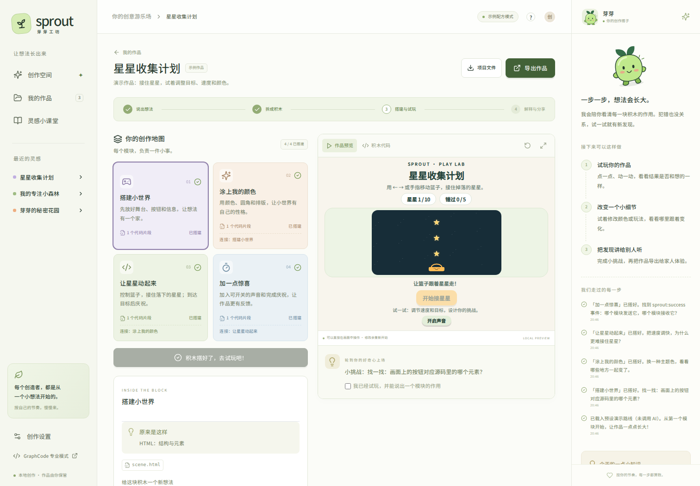
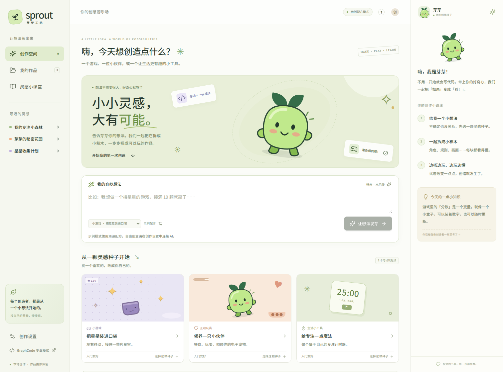

01 / START
不知道怎么开始
空白输入框很自由，
也可能让新手无从下手。
A LITTLE IDEA. A WORLD TO MAKE.
把点子种出来，
把每一步看明白。
面向孩子与初学者的可视化 coding agent
由 Graph Code 生长而来。
一个点子，到持续创作之间，还有三个断点。
空白输入框很自由，
也可能让新手无从下手。
有了代码，却不知道
角色、分数和声音在哪里。
反复要求 AI 重做，
很难积累自己的判断。
我们要让孩子能够说：“这一块，我会改。”
CORE CREATORS
8+ 低龄探索采用成人指导；
年龄范围不是已验证效果。
做出一个可玩的作品，
再自己改一条规则。
看见创作过程，
减少配置与排错负担。
用同一套引导，
支持不同孩子的点子。
购买者：家长 / 活动负责人
首次作品 → 自主修改 → 解释原因
从一句话到一个作品，再到创作者自己的判断。
game.js→模块连接真实文件，
修改有目标，结果可验证。
第一次成功之后，还能独立成功一次。
接星星 → 模块地图 → 可玩预览
产品演示流程示意 · 运行截图就绪后自动显示
接星星 / 电子宠物 / 专注计时器
角色、场景、规则对应实际文件
改变速度，检查行为，再导出作品
一个友好入口，一条进阶路径
工坊首页截图就绪后自动显示
START HERE
模板 · 模块 · 进度
预览 · 修改 · 导出
GROW FURTHER
保留图、文件与 coding 能力
继续支持外部模型 API
成人账户、教师后台、真实计费尚待产品化。
AR/VR 为路线图方向，不是当前演示能力。
Scratch 官方累计覆盖的年轻人
Scratch 官方自报创造的项目
这些数字说明创作生态的规模，不是 Sprout 的活跃用户、付费潜客或 TAM。
| 已有选择 | 已确认的优势 | SPROUT 要证明的价值 |
|---|---|---|
| Scratch / CodeAI CodeAI 原 Code.org | 免费创作、课程与教师生态 | 目标 → 模块 → 真实文件 形成可理解的进阶路径 |
| Tynker | 儿童课程与家长关系 | 围绕孩子自己的点子 持续进行开放式迭代 |
| Replit / Lovable / Bolt | 通用自然语言构建能力 | 更少成人介入 更高自主修改成功率 |
接入 AI、共享额度、低价，都不是独家壁垒。
真实 STUDIO 路径 · 太空计时器
5 次真实 Codex 调用 · 4 模块 · 0 修复
1 次拆分 + 4 次构建，共 171.7 秒。
只测 1 个自选任务，不代表总体成功率。
以上是目标，尚未取得用户或教育效果数据。
也公开不利结果：图工程小样本 context 估计 token 相比 legacy coding / review 增加 82.6% / 91.5%，不能声称已经省 token。
本地演示与模块学习
预览、导出与开源能力
先做出第一件小作品。
60 个创作点
对应 ¥12 模型成本预算
成人管理额度与加油。
20 个受管理名额
360 点 / ¥72 模型预算
不含人工授课，后台待开发。
首年基准情景
120 家庭 × ¥490/年 + 10 机构 × ¥2,990/年
三年渠道情景
2,250 家庭 + 60 机构；每个转化假设都需验证。
第一步不是圈住全球儿童人口，而是让一个社团愿意再带一次活动。
满额 ¥12 模型预算
贡献毛利情景
无上限重度情景
因此不能承诺无限量
基准贡献毛利
20 次创作 / 月
每次累计 20k 输入 + 5k 输出
模型锚点：输入 $1、输出 $5 / 百万 tokens。
汇率假设：USD/CNY = 7.2，不是实时外汇报价。
不含固定研发、获客及税；图片和外部工具另计。
真实重试与支持成本必须在试点中记录。
现在
三类创作作品
可视化工作流
保留 coding / API
0–4 周
12 家庭 / 6 教师访谈
24 人可用性试点
验证自主修改
5–12 周
成人真实付费试点
教师独立带课
W4 留存与成本
4–6 月
成人 / 机构账户
服务端硬预算
同意与删除流程
本地 demo 不等于儿童云服务合规。公开运营前核验适用地区、家长同意、供应商数据路径和安全边界。
LET’S GROW THE NEXT GENERATION OF MAKERS.
从 Graph Code 的图与 agent 能力出发，
给孩子一个能理解、能掌控、能继续的创作入口。
把点子种出来。
把每一步看明白。